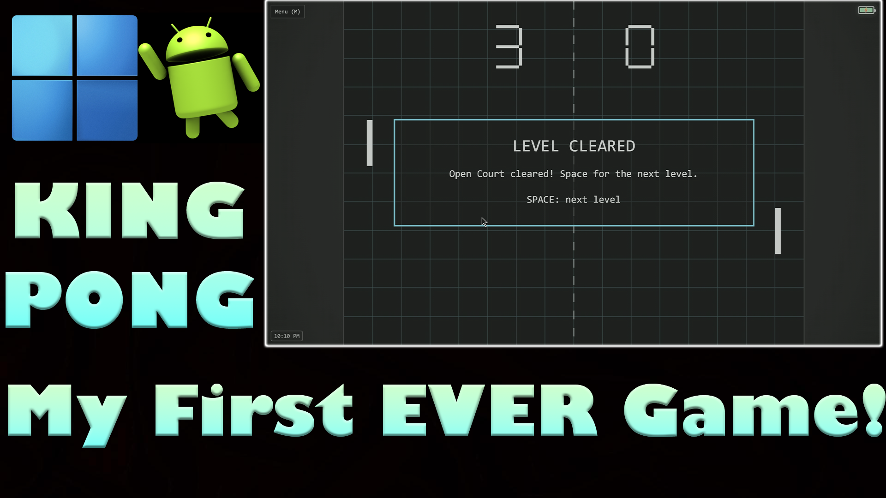
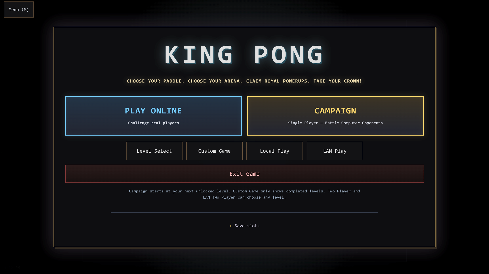
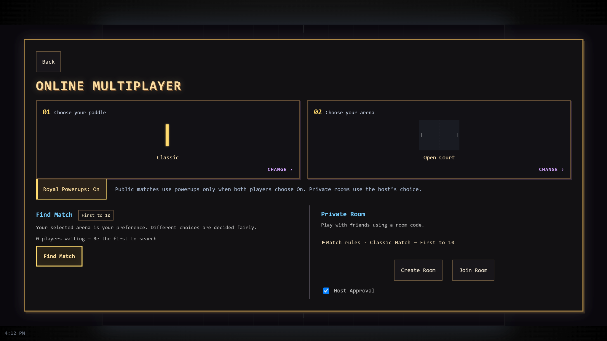
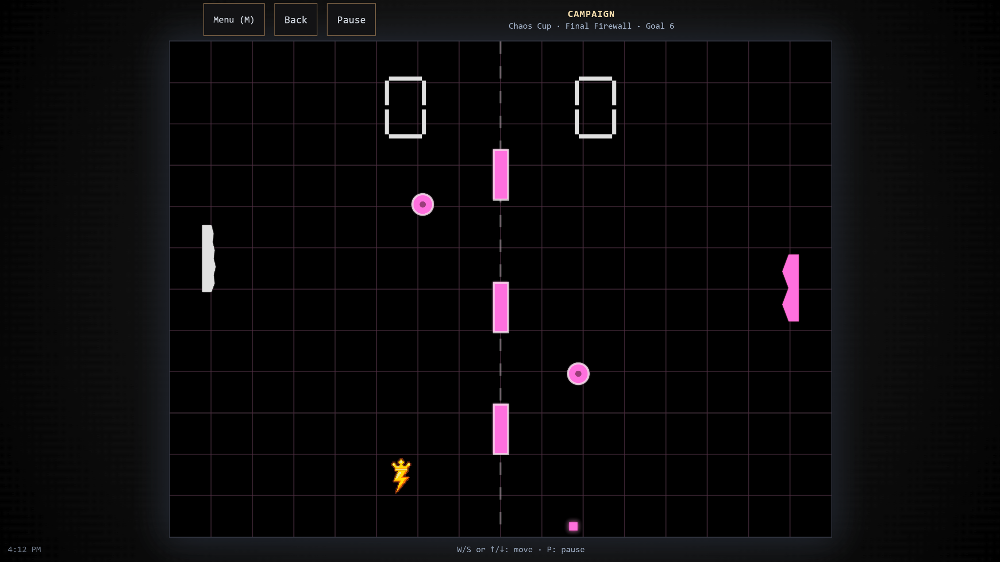

King Pong v2.0.0 brings worldwide cross-platform online multiplayer, Royal Powerups, smarter CPU opponents, and a redesigned arcade experience to browser, Android, Windows, and Linux.
Battle other players through public online matchmaking or invite friends to private rooms with room codes and optional host approval. Rematch your opponent, choose your arena and paddle, and decide whether to enable Royal Powerups. Browser, Android, Windows, and Linux players share the same matchmaking pool.
Prefer playing solo? Take on an 18-level campaign with increasingly capable CPU opponents, revisit unlocked levels through Level Select, or create a Custom Game. Local two-player and LAN modes are also available, alongside a secret boss and ending.
Developed with AI-assisted coding and packaging help, then manually tested, debugged, and polished by King Alex Gilbert.
Launch King Pong in your browser with no installation needed. Play the campaign, create a private room, or find an online opponent across supported platforms.
Open the full game in its own tab for keyboard, controller, or touch controls. For mobile, landscape mode works best. Browser progress is stored separately on this device.
Watch the official King Pong gameplay video on YouTube.

King Pong's biggest update adds new ways to compete and a cleaner arcade interface.



Download King Pong for Android, Linux, or Windows from F-Droid, itch.io, or GitHub Releases. For full online multiplayer in a browser, launch the GitHub Pages game above.
Get it on F-Droid Download on itch.io GitHub Releases Source Code